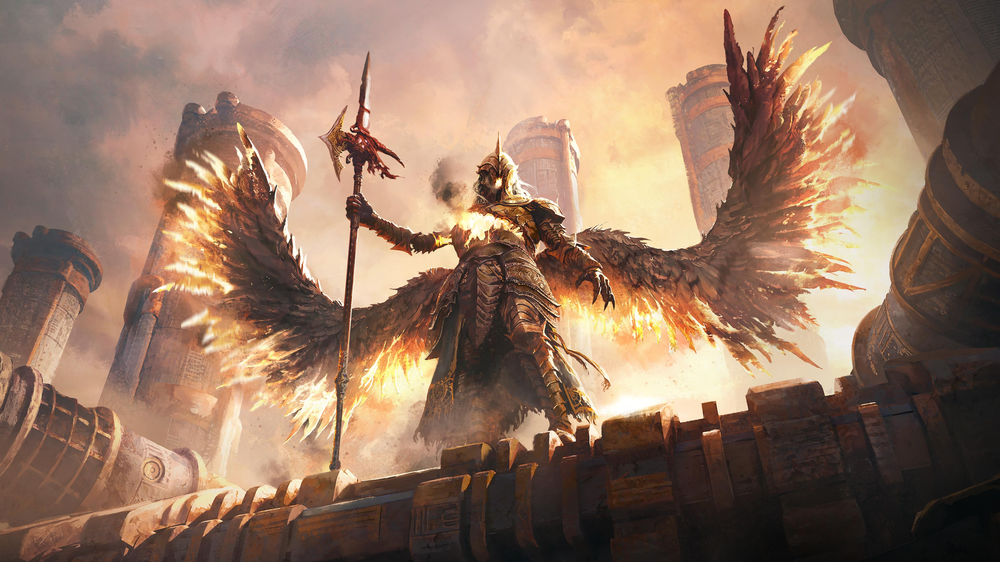
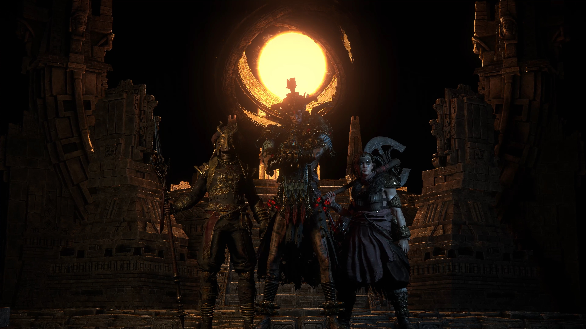

Чиула Стартер START
Стартовый билд для начала лиги. Отлично подходит для прокачки и первых карт.

Path of Exile 2 • Гайды и билды

Алдур и другие Древние пробуждаются после векового сна. Новые рунические механики, ритуалы призыва и эпические сражения ждут вас в этом масштабном обновлении.

Мастер боевых искусств, использующий силу духа и тела. Специализируется на ближнем бою, комбо-атаках и молниеносных перемещениях.

Ритуалы Механик, Делириум и другие возвращающиеся механики в новом исполнении. Испытайте свои билды в изменённых локациях.

О новой лиге, билдах и стратегиях
Kepa Mita считает новую лигу интересной с точки зрения контента и механик, но не предлагает чётких рекомендаций по билдам за пределами своего личного опыта. Её позиция: Монах через Фликер (Чи Юла) — рабочий вариант; Ветерки — допустимы, но менее захватывающие из-за низкой стоимости сборки.
⚠️ Мила часто шутит над аудиторией и чатом, поэтому некоторые её высказывания следует воспринимать с долей иронии или как импровизацию.
Стартовый билд для начала лиги. Отлично подходит для прокачки и первых карт.
Усиленная версия для фарма боссов и эндгейм контента. Максимальный урон по целям.

Быстрый фарм карт. Отличная скорость зачистки для эффективного фарма.

Неадекватно сильный стартер с огромным уроном по боссам и молниеносной зачисткой за экран. Смерч бафает ветерков нажатием пары кнопок — дальше они сами перемалывают всё на экране. Заводится уже в первом акте, легко прогрессирует через всю кампанию и превращается в машину смерти к четвёртому акту. Работает на Амазонке-Хантрессе, а после актов открывает путь в Фликер, Вихрь или Дракона.